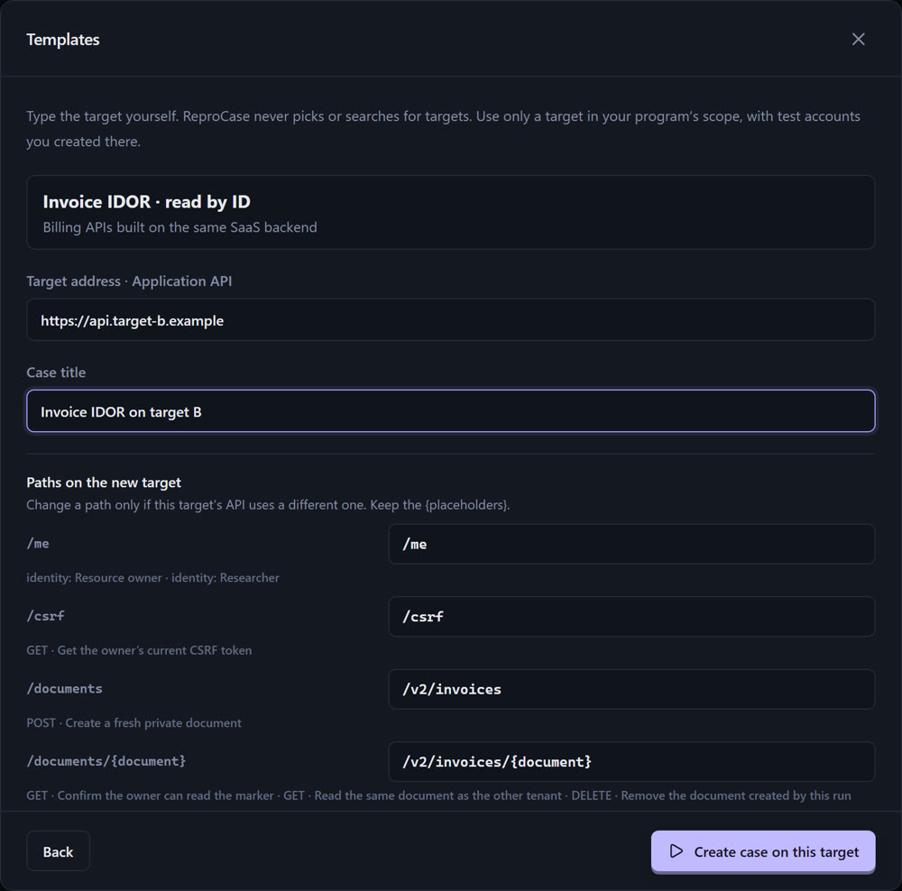
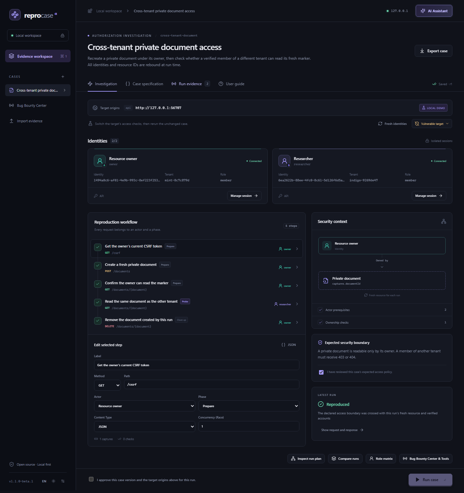

HTTP 200 isn’t proof.
ReproCase is.
Reproduce IDOR/BOLA, role and CORS findings with fresh test accounts, get a clear verdict, and hand the triager a case they rerun with their own accounts.
Windows · macOS (Apple silicon & Intel) · Linux · Docker · Burp extension · no API key needed
Authorization bugs die in triage.
A screenshot of a 200 response doesn’t prove that account B really reached account A’s data. The triager can’t use your sessions, the object you tested is gone, and the report gets closed.
From finding to rerunnable proof in four steps.
Connect two test accounts
ReproCase finds who each account really is from the API, before anything runs.
Paste two requests
One that creates an object as A, one that B uses to reach it. Copied straight from Burp or DevTools.
Run with a fresh object
A brand-new object and marker every run, then Reproduced, Not reproduced or Inconclusive.
Share one package
Credentials are removed. The triager binds their own accounts and gets the same verdict.
Checks that a 200 can’t fake.
Cross-account reads
B reads the exact marker in A’s object that was created in this run.
Real changes
The owner reads the object before and after, so a change is proven, not assumed.
Privilege checks
A lower role reaches an admin-only action, compared against live roles and an anonymous control.
Browser reads
A real Chromium read from a foreign or null origin with the user’s cookie, not just headers that look wrong.
Proved it once? Reuse the proof.
- Save any case as a template. Accounts, targets, tokens and evidence are left out.
- You type the next target. ReproCase never picks or searches for targets.
- Map paths when the API differs. Placeholders stay the same.
- Scope-checked. A saved program’s scope is checked when the case is created and on every request.


Safe by default.
- Local-first. Runs on your machine; no account and no API key needed.
- Your program’s rules. Scope, exclusions, rate limit and request budget apply to every request.
- Cleans up. Objects created for a run are removed; if not, you get their address.
- Honest verdicts. Wrong accounts or failed setup end as Inconclusive, never as a finding.
- For triagers too. “Verify on my site” reruns a report on your own target with your own accounts.
Get ReproCase.
Every build is made on GitHub Actions, with SHA-256 sums and build-provenance attestations. The apps are not code-signed yet.
git clone https://github.com/theasbug/reprocase.git cd reprocase docker compose up
Questions
Is ReproCase a scanner?
No. It reproduces and proves a finding you already have, on a target you name, with test accounts you control. It doesn’t crawl or search for targets.
What does the triager need?
The exported package and two test accounts on their side. They run the same case and get their own verdict.
Does it need an AI provider?
No. The proof engine works without any API key. An optional assistant can use a provider you configure.
Is it free?
Yes. ReproCase is open source under the Apache-2.0 license.